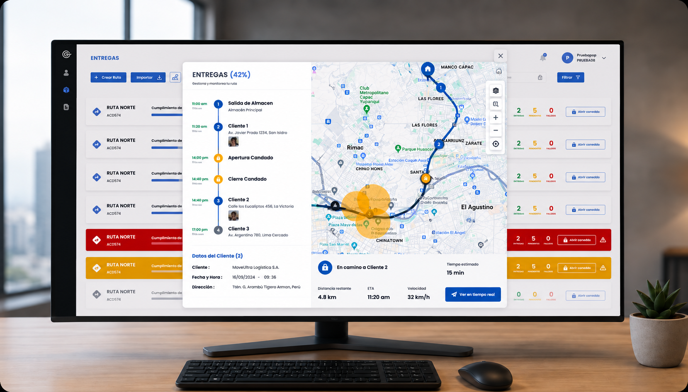

Satelock
Monitoreo de flotas
Rediseñé el monitoreo de flotas para que el operador identifique qué requiere atención y actúe con menos navegación. −25% en tiempo de reacción.
Explorar caso de estudio
Problema y Solución
Operación saturada.
Decisiones más lentas.
La información crítica competía por atención y evaluar una incidencia exigía demasiado esfuerzo.
Tiempo de respuesta
ante incidencias
En jornadas prolongadas
Información priorizada.
Acción más rápida.
Estado de activos, alertas y acciones críticas en un mismo flujo.
Tiempo de reacción
ante incidencias
Menos navegación y búsqueda
Contexto de negocio
Una operación donde cada incidencia requiere contexto y acción.
Satelock permite monitorear activos y gestionar incidencias en operaciones logísticas. El desafío no era mostrar más información, sino que el operador identifique qué requiere atención, entienda el contexto y actúe.
en operación
identificar incidencias
tomar decisiones
la incidencia
Así se vive una incidencia desde el lado del operador.
Tiempo de respuesta inicial
Ante incidencias operativas.
Usuarios evaluados
Operadores y usuarios del producto.
Shadowing operativo
Observación del trabajo y contexto de uso.
Reducir el esfuerzo y tiempo de respuesta operativo.
Que el operador detecte, evalúe y responda más rápido y con menos carga.
De la ruta
a la operación.
Conductor, plataforma y dispositivo: cada solicitud se valida antes de ejecutarse.
Conductor
Solicitud desde la app.
- Solicita apertura de candado
- Comparte su ubicación
- Recibe notificaciones de estado
Satelock
Validación y control.
- Valida la solicitud
- Aplica reglas de seguridad
- Ejecuta la acción en el dispositivo
Apertura de candado
Ejecución en el dispositivo.
- Recibe la instrucción
- Desbloquea el candado
- Confirma la apertura
- Envía su estado
Una misma lógica de producto conectando personas, plataforma y dispositivo.
Una interfaz clara para una operación más segura.
Diseñamos un sistema visual pensado para entornos operativos, priorizando la claridad, la consistencia y la rápida identificación de estados críticos.
- Componentes consistentes
- Estados visuales claros
- Experiencia escalable
Colores
Paleta funcional que comunica estados y jerarquía.
Tipografía
Poppins, para una lectura clara en entornos operativos.
Poppins
Componentes
Elementos reutilizables para mantener consistencia.
Estados operativos
Señales visuales para identificar rápidamente el estado de los activos.
Iconografía
Íconos simples y consistentes para facilitar la comprensión.
Componentes, colores y patrones diseñados para facilitar la gestión de activos, mejorar la legibilidad y mantener una experiencia consistente en todo el producto.